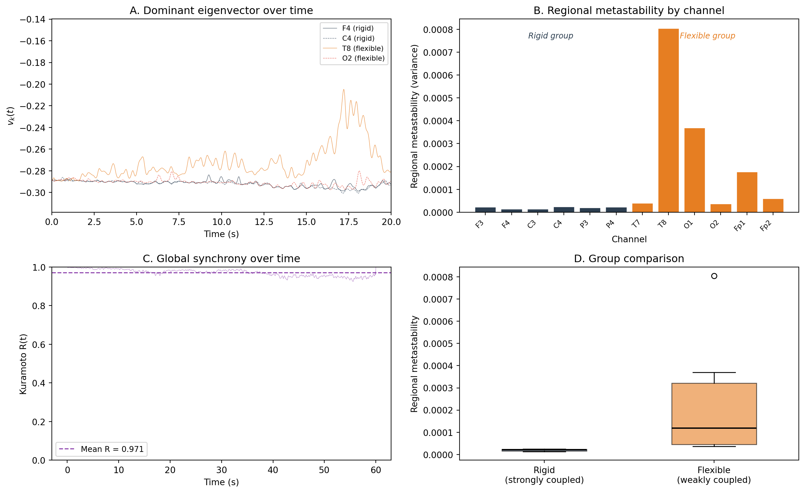

import numpy as np
import matplotlib.pyplot as plt
from scipy.signal import hilbert, butter, filtfilt
rng = np.random.default_rng(42)
# ── 1. Simulation parameters ──────────────────────────────────
n_channels = 12
sfreq = 256
duration = 60 # seconds (need enough data for stable variance)
n_samples = sfreq * duration
times = np.arange(n_samples) / sfreq
freq_osc = 10.0 # alpha frequency
# Define two groups of channels:
# - "Rigid" channels (0-5): strongly coupled, low metastability
# - "Flexible" channels (6-11): weakly coupled, high metastability
coupling = np.array([
0.92, 0.90, 0.88, 0.91, 0.89, 0.93, # rigid group
0.30, 0.25, 0.35, 0.28, 0.32, 0.22, # flexible group
])
channel_labels = (
["F3", "F4", "C3", "C4", "P3", "P4"] # "rigid" (frontal/central/parietal)
+ ["T7", "T8", "O1", "O2", "Fp1", "Fp2"] # "flexible" (temporal/occipital/frontal-pole)
)
# ── 2. Generate coupled oscillatory data ──────────────────────
# Common reference oscillation
ref_phase = (2 * np.pi * freq_osc * times
+ 0.3 * np.cumsum(rng.standard_normal(n_samples) / sfreq))
ref_signal = np.sin(ref_phase)
data = np.zeros((n_channels, n_samples))
for ch in range(n_channels):
ind_phase = (2 * np.pi * freq_osc * times
+ 2.0 * np.cumsum(rng.standard_normal(n_samples) / sfreq))
ind_signal = np.sin(ind_phase)
data[ch] = (coupling[ch] * ref_signal
+ (1 - coupling[ch]) * ind_signal
+ 0.3 * rng.standard_normal(n_samples))
# ── 3. Band-pass filter and Hilbert transform ─────────────────
b, a = butter(4, [8, 13], btype="band", fs=sfreq)
phases = np.zeros_like(data)
for ch in range(n_channels):
filtered = filtfilt(b, a, data[ch])
phases[ch] = np.angle(hilbert(filtered))
# ── 4. Dominant eigenvector at each time point ────────────────
step = max(1, sfreq // 100) # compute every 10 ms
time_indices = np.arange(0, n_samples, step)
n_timepoints = len(time_indices)
eigvec_series = np.zeros((n_channels, n_timepoints))
for ti, t in enumerate(time_indices):
phi = phases[:, t]
phase_diff = phi[:, None] - phi[None, :]
A = np.cos(phase_diff)
eigenvalues, eigenvectors = np.linalg.eigh(A)
dominant = eigenvectors[:, -1]
# Sign continuity
if ti > 0 and np.dot(dominant, eigvec_series[:, ti - 1]) < 0:
dominant = -dominant
eigvec_series[:, ti] = dominant
# ── 5. Regional metastability ─────────────────────────────────
regional_ms = np.var(eigvec_series, axis=1)
# ── 6. Global metastability (Kuramoto) ────────────────────────
R = np.abs(np.mean(np.exp(1j * phases[:, time_indices]), axis=0))
global_ms = np.var(R)
# ── Print results ─────────────────────────────────────────────
print("Regional metastability:")
print("-" * 45)
for ch in range(n_channels):
group = "rigid" if ch < 6 else "flexible"
print(f" {channel_labels[ch]:>4s} (coupling={coupling[ch]:.2f}, "
f"{group:>8s}): MS = {regional_ms[ch]:.6f}")
print(f"\nMean MS (rigid group): {regional_ms[:6].mean():.6f}")
print(f"Mean MS (flexible group): {regional_ms[6:].mean():.6f}")
print(f"Global metastability: {global_ms:.6f}")
# ── 7. Visualisation ──────────────────────────────────────────
fig, axes = plt.subplots(2, 2, figsize=(13, 8))
# Panel A: Eigenvector dynamics for selected channels
ax = axes[0, 0]
t_plot = time_indices / sfreq
for ch, colour, ls in [(1, "#2c3e50", "-"), (3, "#34495e", "--"),
(7, "#e67e22", "-"), (9, "#e74c3c", "--")]:
label = f"{channel_labels[ch]} ({'rigid' if ch < 6 else 'flexible'})"
ax.plot(t_plot, eigvec_series[ch], linewidth=0.5,
color=colour, linestyle=ls, alpha=0.8, label=label)
ax.set_xlabel("Time (s)")
ax.set_ylabel(r"$v_k(t)$")
ax.set_title("A. Dominant eigenvector over time")
ax.legend(fontsize=8, loc="upper right")
ax.set_xlim(0, 20) # first 20 seconds
# Panel B: Regional metastability bar chart
ax = axes[0, 1]
colours = ["#2c3e50"] * 6 + ["#e67e22"] * 6
bars = ax.bar(range(n_channels), regional_ms, color=colours,
edgecolor="white", linewidth=0.5)
ax.set_xlabel("Channel")
ax.set_ylabel("Regional metastability (variance)")
ax.set_title("B. Regional metastability by channel")
ax.set_xticks(range(n_channels))
ax.set_xticklabels(channel_labels, rotation=45, ha="right", fontsize=8)
# Group labels
ax.text(2.5, ax.get_ylim()[1] * 0.9, "Rigid group",
ha="center", fontsize=9, color="#2c3e50", fontstyle="italic")
ax.text(8.5, ax.get_ylim()[1] * 0.9, "Flexible group",
ha="center", fontsize=9, color="#e67e22", fontstyle="italic")
# Panel C: Kuramoto order parameter
ax = axes[1, 0]
ax.plot(t_plot, R, linewidth=0.4, color="#8e44ad", alpha=0.7)
ax.axhline(np.mean(R), color="#8e44ad", linestyle="--", linewidth=1.2,
label=f"Mean R = {np.mean(R):.3f}")
ax.set_xlabel("Time (s)")
ax.set_ylabel("Kuramoto R(t)")
ax.set_title("C. Global synchrony over time")
ax.set_ylim(0, 1)
ax.legend(fontsize=9)
# Panel D: Group comparison box plot
ax = axes[1, 1]
group_data = [regional_ms[:6], regional_ms[6:]]
bp = ax.boxplot(group_data, labels=["Rigid\n(strongly coupled)",
"Flexible\n(weakly coupled)"],
patch_artist=True, widths=0.5)
bp["boxes"][0].set_facecolor("#2c3e50")
bp["boxes"][0].set_alpha(0.6)
bp["boxes"][1].set_facecolor("#e67e22")
bp["boxes"][1].set_alpha(0.6)
for median in bp["medians"]:
median.set_color("black")
median.set_linewidth(1.5)
ax.set_ylabel("Regional metastability")
ax.set_title("D. Group comparison")
plt.tight_layout()
plt.show()Regional metastability:
---------------------------------------------
F3 (coupling=0.92, rigid): MS = 0.000023
F4 (coupling=0.90, rigid): MS = 0.000014
C3 (coupling=0.88, rigid): MS = 0.000014
C4 (coupling=0.91, rigid): MS = 0.000024
P3 (coupling=0.89, rigid): MS = 0.000020
P4 (coupling=0.93, rigid): MS = 0.000023
T7 (coupling=0.30, flexible): MS = 0.000040
T8 (coupling=0.25, flexible): MS = 0.000805
O1 (coupling=0.35, flexible): MS = 0.000370
O2 (coupling=0.28, flexible): MS = 0.000037
Fp1 (coupling=0.32, flexible): MS = 0.000177
Fp2 (coupling=0.22, flexible): MS = 0.000060
Mean MS (rigid group): 0.000020
Mean MS (flexible group): 0.000248
Global metastability: 0.000304/var/folders/_t/0zvl8h2j3fv5__973dlfsvgw0000gq/T/ipykernel_11879/3387939107.py:138: MatplotlibDeprecationWarning: The 'labels' parameter of boxplot() has been renamed 'tick_labels' since Matplotlib 3.9; support for the old name will be dropped in 3.11.
bp = ax.boxplot(group_data, labels=["Rigid\n(strongly coupled)",